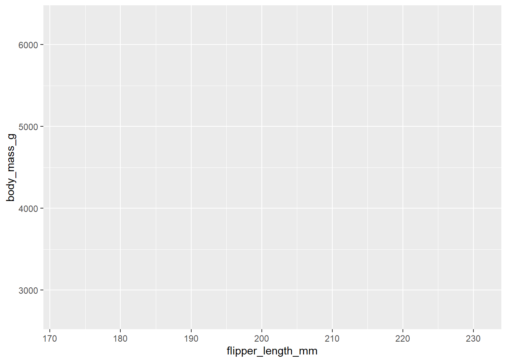

install.packages('pacman')1 Introduction
1.1 Why data visualisation?
Data visualisation is arguably one of the most important part of any analysis journey. It is a powerful tool with a wide range of uses, including:
- Exploring the data: checking for outliers, potential errors, and generally ‘getting to know’ our data
- Generating hypotheses: investigating potential trends in the data, identifying important variables to include in a model
- Checking parametric assumptions: validating analysis methods that require certain assumptions to be valid, e.g. distributions of variables
- Communicating results: often visualisations are far more powerful and concise than text or tables at conveying important messages to readers
Each of these intentions may require a different visualisation, but all of them must follow the same design priciples. They must be clear, appropriate, honest, and inclusive.
1.2 A grammar of graphics
Although R has a number of options to display data, this course will focus on one of the more popular and flexible approaches, ggplot. ggplot2 is an R package that is a member of the tidyverse, a suite of R packages designed to make data analysis/science more accessible and efficient.
The ggplot2 package implements a ‘grammar of graphics’ approach, in which graphs are composed of multiple layers. According to the grammar of graphics, all visualisations must contain three elements: the data, the information we wish to display, and some mapping, describing how to visualise the information.
To illustrate this, let’s create a simple visualisation to investigate the relationship between the body mass and flipper length of penguins in the Palmer archipelago, Antarctica.
Warning
If you have never used the pacman package before, install this to your computer using the following function:
The pacman package is a set of package management functions which is designed to make tasks such as installing and loading packages simpler, and speeds up these processes. The p_load function acts as a wrapper for the library function, which checks to see if a package is present on the current machine, and installs them from CRAN if they are not. If a package exists on a machine, it will load it as usual.
pacman::p_load(tidyverse, palmerpenguins)
data(penguin)
ggplot(data = penguins)- 1
-
We must first load the R packages we require. This may take a long time if you have never downloaded
tidyversebefore, do not worry if a lot of text appears, this is normal!! - 2
-
We then load the dataset we will be using for this part of the course from the
palmerpenguinspackage. - 3
-
The first element required for a
ggplotis the data. As the other two layers are missing, this will just produce a blank plot area.

ggplot(data = penguins, aes(x = flipper_length_mm, y = body_mass_g))- 4
-
The second element that is required for a
ggplotis the information we wish to present. This is the flipper lengths and body masses of our penguin sample.

ggplot(data = penguins, aes(x = flipper_length_mm, y = body_mass_g)) +
geom_point()- 5
-
The final element required is some physical markings of the data. As both variables we wish to present are continuous, we could show every observation as a point in a scatterplot. In
ggplot2, a marking can be added using ageomfunction.

Warning
Although ggplot2 is part of the tidyverse suite of packages, the pipe symbol (%>% or |>) is replaced with + when adding layers to a ggplot.
The plot may not be pretty, but it contains all three elements required by graphics, and shows a clear positive association between penguins’ flipper length and body mass. Additional layers will be introduced throughout this course to improve the design of this visualisation.
1.3 Choosing the most appropriate visualisation
The choice of visualisation should be driven first and foremost by the context, the audience, and the goal of the graphic. Often, people choose axes of graphics based on the data available to them. Although the choice of visualisation is influenced (and sometimes restricted) by the number and type of variables available, it should be fundamentally decided based on the message we wish to convey to the readers and the most efficient way to do this.
Most common visualisations can be generated in ggplot2 using a geom function. There are many options available, some of which will be covered throughout this course, many will not. Table 1.1 provides a sample of some of the most common visualisation types, classified by the number and type of variables they are compatible with. For many more options, including many non-standard graphs, visit the From data to viz or view R code examples through their R graph gallery.
geom function used to generate them.
| Number of variables | Type of variables | Name of visualisation | R function |
|---|---|---|---|
| One variable | Categorical | Frequency table | table |
| Bar chart | geom_bar | ||
| Numerical | Histogram | geom_histogram | |
| Spatial | Map | geom_sf | |
| Temporal | Line plot | geom_line | |
| Two variables | Two categorical | Frequency table | table |
| Stacked/side-by-side bar chart | geom_bar | ||
| One numeric, one categorical | Dot plot | geom_point | |
| Box plot | geom_boxplot | ||
| Two numerical | Scatterplot | geom_point | |
| > 2 variables | > 2 categorical | Table | table |
| 2 numeric, one categorical, or > 2 numeric | Scatterplot with different colours/symbols/sizes | geom_point |